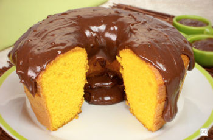

Bolo de Cenoura
Ingredientes:
Massa
- 1/2 xícara (chá) de óleo
- 4 ovos
- 2 e 1/2 xícaras (chá) de farinha de trigo
- 3 cenouras médias raladas
- 2 xícaras (chá) de açúcar
Cobertura
- 1 colher (sopa) de manteiga
- 1 xícara (chá) de açúcar
- 3 colheres (sopa) de chocolate em pó
- 1 xícara (chá) de leite
Modo de Preparo:
Massa
No liquidificador, adicione as cenouras picadas, os ovos e o óleo. Bata até obter uma mistura homogênea.
Acrescente o açúcar e bata por mais 5 minutos. Transfira a mistura para uma tigela ou batedeira, adicione a farinha de trigo e misture bem.
Acrescente o fermento e mexa lentamente com uma colher. Despeje a massa em uma forma untada e leve ao forno preaquecido a 180 °C por cerca de 40 minutos.
Cobertura
Em uma panela, adicione a manteiga, o chocolate em pó, o açúcar e o leite. Misture bem e leve ao fogo, mexendo até obter uma consistência cremosa.
Despeje a calda ainda quente sobre o bolo assado.

Veja a receita de bolo de cenoura